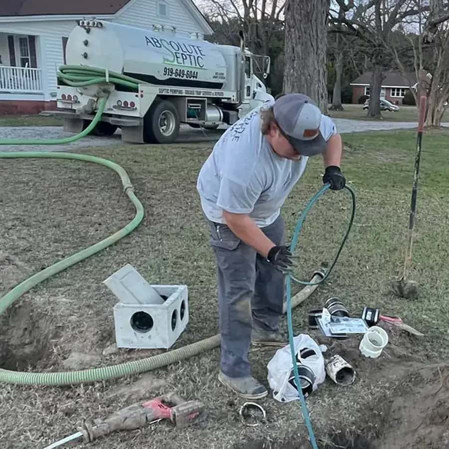
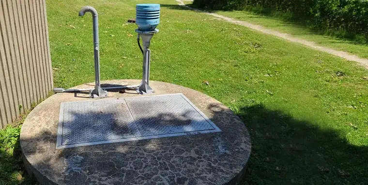
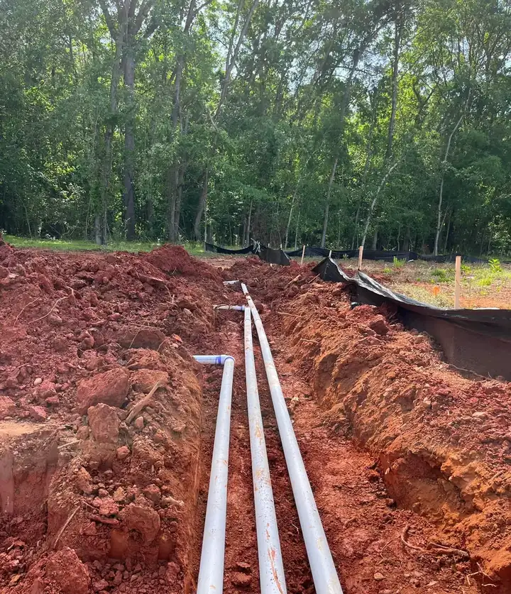
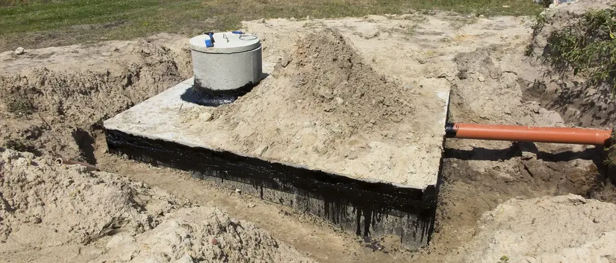
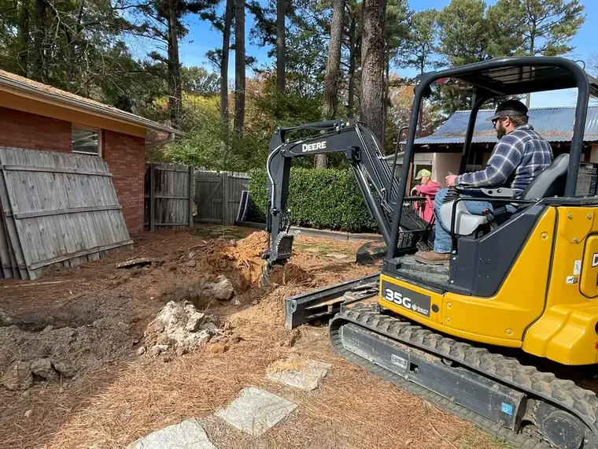
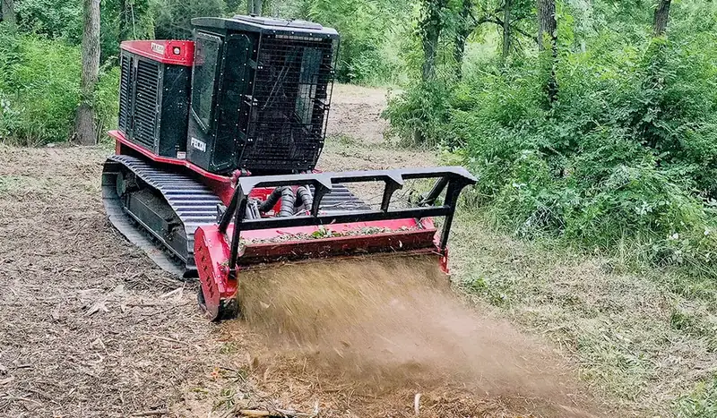

01
Septic pumping
Septic tank pump outs for homes and businesses.

Home / Services
Services
Taken from the service list on Absolute Septic’s own website, grouped the way customers call.
Septic tank pump outs for homes and businesses.

Deep tanks get risers so the next pump out does not start with a shovel. One customer’s lid was almost three feet down.

Baffles, lines, pump tanks, pump replacement and alarms. Lift stations too.
When the field is saturated, it gets dug out and replaced to the county permit.

Traditional systems with concrete or plastic tanks, permits handled.

Pumping and repairs for restaurant grease traps.
Site prep, French drains, sewer repairs, lot clearing, grading and small demolition: sheds, barns and mobile homes.

A mulching head grinds brush and small trees into mulch on the spot. It clears overgrown lots, fence lines and trails without hauling debris away, and the mulch helps hold the soil.
Placeholder machine, cutting width, minimum job size and a sample before and after.

Steps from the “simple process” on Absolute Septic’s old site.